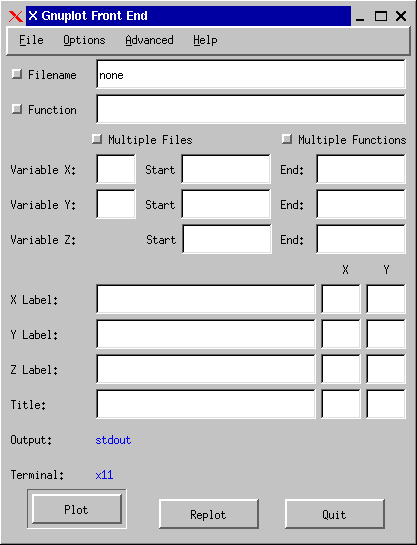
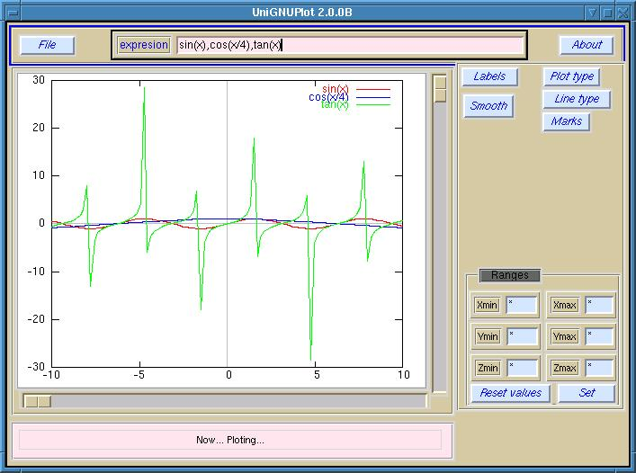
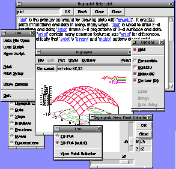

| Herramientas en GNU/Linux para estudiantes universitarios: | ||
|---|---|---|
| Anterior | Capítulo 10. Dónde seguir. | Siguiente |
Xgfe: X gnuplot front end.

UniGNUPlot: interfáz en Tcl/Tk para gnuplot 3.6 o superior.

tkgnuplot: interfaz en Tcl/Tk

Chart::Graph::Gnuplot interfaz en Perl para realizar gráficos usando gnuplot.
Gnuplot.py interfaz en python para realizar gráficos usando gnuplot.
gnuplot-mode.el modo de emacs para facilitar la edición de scripts de gnuplot.